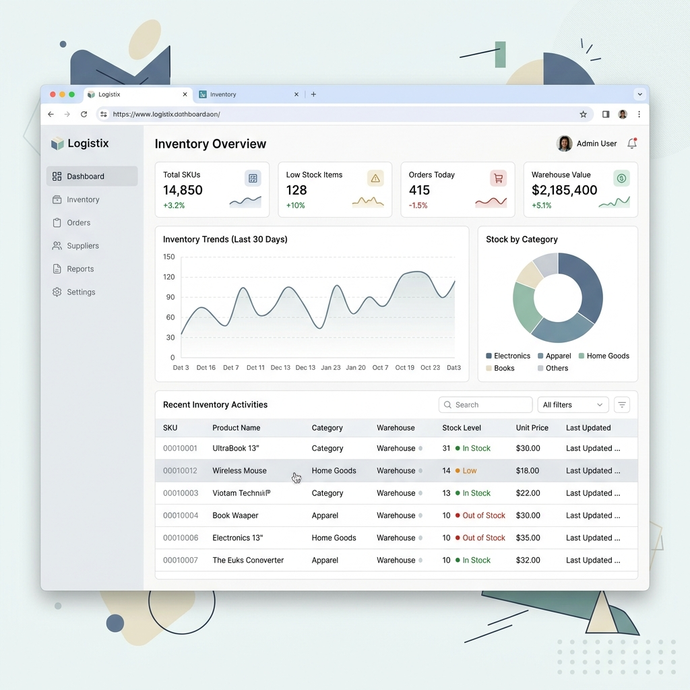
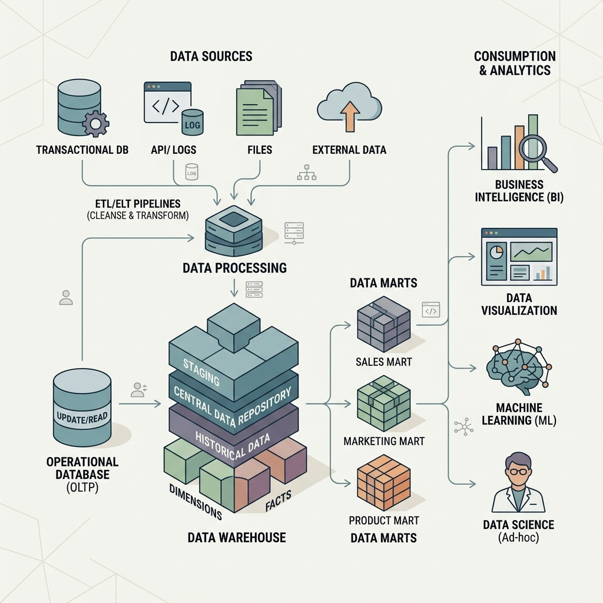
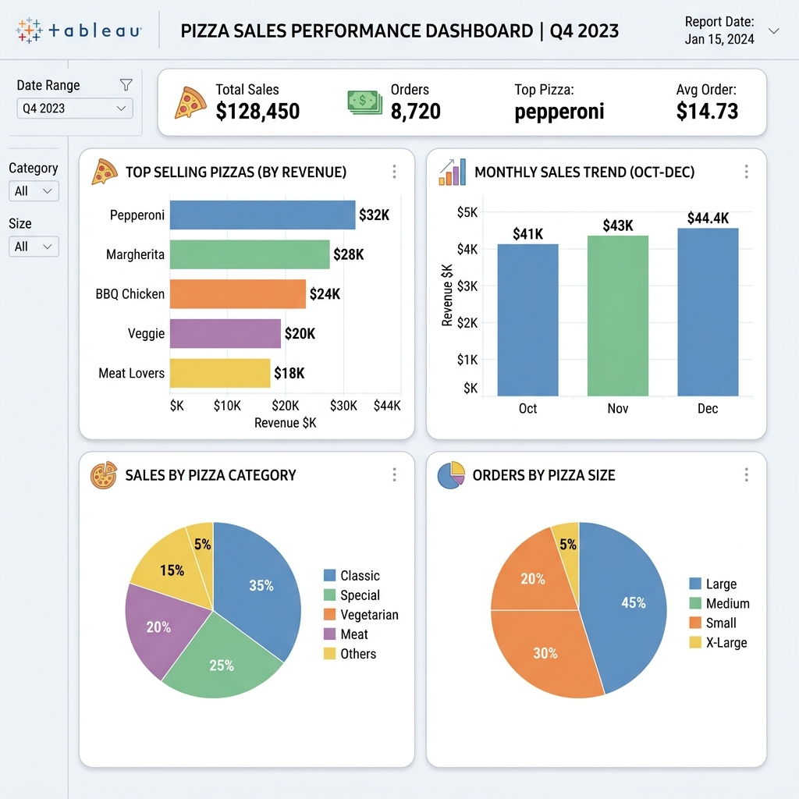
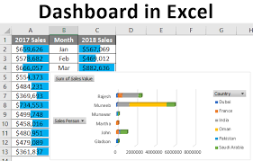

Inventory Management System
Python, MySQL
A system to manage and interact with an inventory database. Allows inserting, updating, and querying products, categories, suppliers, orders, and customers.
View Source
Python, MySQL
A system to manage and interact with an inventory database. Allows inserting, updating, and querying products, categories, suppliers, orders, and customers.
View Source
SQL Server, Data Modeling
Building a modern data warehouse with ETL processes, data modeling, and analytics to deliver insights into customer behavior and sales trends.
View Source
SQL, Tableau
Analyzes pizza sales data to derive meaningful insights. Uses SQL for data processing and Tableau for visualization of KPIs and sales trends.
View Source
EXCEL, Visualization
Online Store Annual Report Dashboard Project Overview This project is an Online Store Annual Report Dashboard built using Microsoft Excel. The dashboard provides a detailed analysis of an online store's performance, visualizing essential metrics.
View Source